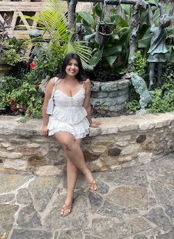

My Background
My story starts in a little town named La Paz in Chihuahua, Mexico. When I was born, everyone from the town came to see me, and since then I’ve believed I was destined for greatness, or at least I’m speaking it into existence.
A few months later, I was brought to Dallas, Texas, where I’ve lived ever since. My dad worked in the U.S., and I was raised alongside my little brother. My childhood was filled with love and normalcy until I was about ten. That year, my dad went back to Mexico with my brother, and I had to stay behind with my mom. I didn’t understand why. I knew about my legal status, but I didn’t grasp what it meant until I got older especially when I realized I couldn’t pursue my dream of working for the FBI.
Eventually, my dad was able to sponsor us, and by the time I was 12, both my mom and I became Permanent Residents. Fast forward many years I went to Dallas College and earned my Associate’s degree during the peak of the COVID pandemic. Though it was a virtual graduation, it still felt like a big accomplishment. Life threw me another curve when I endured a deeply painful relationship with emotional, physical, and mental hardship that I eventually walked away from. At 26, I returned to my parents’ home and began to heal.
Recently, my dad lost his job after decades of working hard for us. I can feel his stress and uncertainty, and that moment lit a fire in me. I want to do more not just for myself, but for my family. They’ve done everything for me. Now it’s my turn to step up.
My Identity
I never really took the time to define my identity until now. If I had to put it into words, I’d say it’s a blend of my past, the values I was taught, and the soul I carry. I am an immigrant. I am the product of love, strength, and sacrifice. I am someone who believes in doing right and helping others whenever I can.
My identity is shaped by my experiences, my family, and my dreams. I am not extremely religious, but I do believe in God and the power of prayer. I am a proud Mexican-American, and I embrace both cultures. I am determined to make my mark on the world. I believe everyone has a purpose. I may not know exactly what mine is yet, but I’m working every day to find it.
My Web Development Journey
My journey into tech is just beginning. This is my first semester back in school, and I’m currently taking three classes. Web development is one of them, and although it’s been a challenge, I’m really enjoying it. It’s a learning curve, but I love the process of building something from nothing.
I’m not just learning code I’m building a future for myself and for the people who’ve always believed in me. I don’t know exactly where this road leads, but I know I’m on the right path. And that’s enough for now.